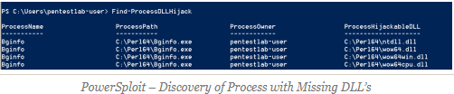

PowerSploit
The process of DLL hijacking can be done also through PowerSploit since it contains three modules that can assist in the identification of services that are missing DLL’s, discovery of folders that users have modification permissions and generation of DLL’s.
The module Find-ProcessDLLHijack will identify all the processes on the system that are trying to load DLL’s which are missing.

The next step is the identification of paths that the user can modify the content. The folders identified will be the ones that the malicious .DLL needs to be planted.

The last step is to generate the hijackable DLL into one of the folders that have been identified above with Modify (M) permissions.